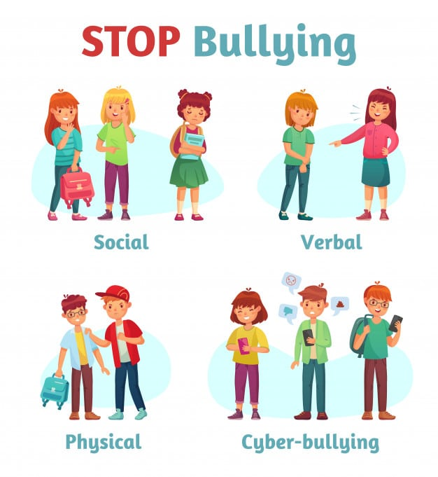

Definição
Bullying é um comportamento agressivo, repetitivo e intencional, que ocorre em relações de desequilíbrio de poder, com o objetivo de intimidar, humilhar ou causar danos físicos ou emocionais a outra pessoa.
Tipos de Bullying
Bullying Social(ou Relacional)
Consiste em ações que prejudicam a reputação ou as relações sociais da vítima. Exemplos incluem espalhar boatos, excluir alguém de grupos, isolar socialmente ou incitar outros a rejeitarem a pessoa.
Bullying Psicológico
Envolve manipulação emocional e intimidação para gerar medo, insegurança ou humilhação. Pode incluir ameaças, chantagem, humilhação pública e comportamentos que minam a autoestima da vítima.
Bullying Físico
Envolve agressões físicas ou ações que causam dano corporal, como empurrões, socos, chutes ou roubos de pertences. É o tipo mais visível e direto de bullying.
Bullying Verbal
Caracterizado pelo uso de palavras para ofender, humilhar ou intimidar a vítima. Exemplos incluem apelidos pejorativos, xingamentos, insultos, provocações e comentários maldosos.
Cyberbullying
É o bullying praticado através de meios digitais, como redes sociais, mensagens de texto, e-mails ou plataformas online. Inclui ofensas, exposição de informações privadas, difamação e mensagens agressivas.
Exemplos de Tipos de Bullying
Efeitos do Bullying
O bullying pode causar efeitos devastadores a curto e longo prazo nas vítimas. Emocionalmente, pode levar à baixa autoestima, ansiedade, depressão e estresse pós-traumático, além de provocar isolamento social. Fisicamente, pode resultar em problemas de saúde como dores de cabeça, distúrbios do sono e até lesões corporais. No ambiente escolar ou profissional, prejudica o desempenho, podendo levar à evasão escolar ou desmotivação. O bullying também pode gerar comportamentos autodestrutivos, como automutilação e uso de substâncias, e em casos extremos, pensamentos suicidas. As vítimas podem ter dificuldades em estabelecer relações saudáveis e, em alguns casos, reproduzir o comportamento agressivo. O impacto do bullying afeta não apenas a vítima, mas também testemunhas e familiares, tornando essencial combater essa prática para criar ambientes mais saudáveis e inclusivos.

Como Prevenir o Bullying
Educação e Conscientização
Promover o respeito e a empatia: Ensinar desde cedo valores como respeito, empatia e tolerância ajuda a criar um ambiente onde o bullying é menos propenso a acontecer. Campanhas educativas: Realizar palestras, oficinas e projetos que expliquem o que é bullying, seus efeitos e a importância de combatê-lo. Capacitação de professores e gestores: Treinamentos para identificar sinais de bullying e lidar com essas situações de forma adequada.
Criação de Ambientes Seguros
Supervisão atenta de espaços comuns, como corredores, pátios e redes sociais, onde o bullying costuma ocorrer. Estabelecer políticas contra o bullying em escolas, empresas e organizações, deixando claro que qualquer comportamento desse tipo será tratado com seriedade. Criar meios seguros e anônimos para que as vítimas ou testemunhas denunciem casos de bullying.
Fortalecimento do Papel da Família
Pais e responsáveis devem criar um ambiente em casa onde as crianças e adolescentes se sintam confortáveis para compartilhar experiências. Os adultos devem demonstrar atitudes de respeito e resolução pacífica de conflitos, servindo de modelo para os jovens. Estar atento ao comportamento das crianças e adolescentes para identificar mudanças que possam indicar que estão sofrendo ou praticando bullying.
Canais Oficiais de denúncia
- Ouvidoria: 0800-041-9192
- Disque Direitos Humanos: 100
- Disque Denúncia: 181
- SAMU (Serviço de Atendimento Móvel de Urgência): 192
- Emergência Policial: 190
- Site Escola Segura: Escola Segura